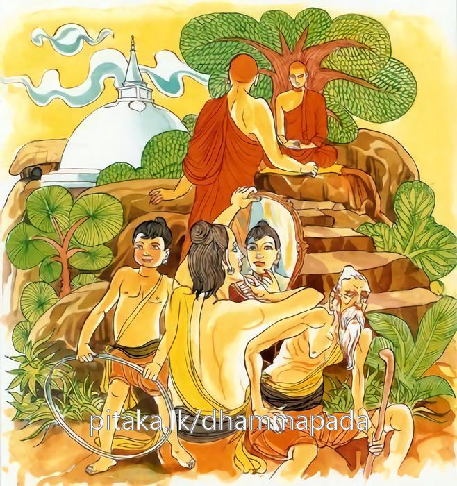

12-1 බෝධිරාජ කුමරුගේ කථා පුවත
මෙම කතාව සද්ධර්ම සාගරයෙන් ද කියවන්න.
අත්තානං චෙ පියං ජඤ්ඤා රක්ඛෙය්ය නං සුරක්ඛිතං
තිණ්ණමඤ්ඤතරං යාමං පටිජග්ගෙය්ය පණ්ඩිතො.
ඉදින් තමා තමහට ප්රිය යැයි දන්නේ වී නම්, එය සුරක්ෂිත කොට රක්නේ ය. (යමෙක් තමා රකිමි යී වැසූ දොරකවුළු ඇති ගෙයකට වැද රකවළ ඇති වැ වසන්නේ ද, අකුසල් කෙරේ නම්, හේ තමා රක්නේ නම් නො වේ. යමෙක් එළිමහනැ සිටින්නේ නුමුදු අකුසලින් දුරු වැ දානාදි සුචරිතයෙහි යෙදේ නම්, හේ තමා රක්නා නම් වේ. එහෙයින් නුවණැත්තේ තුන් වයසෙන් එක්තරා වයසෙක අකුසලින් දුරු කොට තමා රක්නේ ය.

"අත්තානඤේච" යන මේ දම්දෙසුම ශාස්තෲන් වහන්සේ භේසකලා වනයෙහි වැඩසිටිය දී බෝධිරාජ කුමරුන් නිමිති කරගෙන දේශනා කළහ.
මේ රාජ කුමරු පොළෝ තලයෙහි අනෙක් ප්රාසාදවලට අසමාන අහසේ ගුරුළෙකු මෙන් කෝකනද නම් ප්රාසාදයක් කරවා එය කළ වඩුවාගෙන් ඔබ මෙයට පෙර මෙබඳු ප්රාසාදයක් කරන ලද්දේද? නැතහොත් මේ පළමු ප්රාසාදය ද යනුවෙන් විමසීය. දේවයන් වහන්ස මෙය පළමුවැන්නයි. පැවසුවිට මෙසේ සිතුවේය. ඉදින් මේ වඩුවා වෙනත් කෙනෙකුට මෙබඳු ප්රාසාදයක් කරන්නේනම් මෙහි ඇති ආශ්චර්යමත් බව නැතිවේ. මේ වඩුවා මැරීම අත්පා කපා දැමීම ඇස් උපුටා දැමීම හෝ කළ යුතු යයි සිතුවේ, අනෙක් කෙනෙකුට මෙබඳු ප්රාසාදයක් කළ නොහැකිවන ලෙසටය. මෙසේ සිතා එය ඔහුගේ හිතවත් මිතුරු" සඤ්ජිතා පුත්ත” නම් රජ කුමරුට පැවසීය. මානවකයා නිසැකවම මොහු මේ දක්ෂ ශිල්පියා මරවන්නේ යයි සිතා, මා කෙරෙහි පැහැදුන මේ වඩු ශිල්පියා බේරා ගන්නට තොරතුරු කියන්නෙමියි සිතා වඩුවා වෙත ගොස් ප්රාසාදයේ නිමවීම් අවසන් දැයි විමසා නිමාකළ බව පැවසූවිට රජ කුමරු නුඹ මැරීමට සිතයි. නුඹ විසින් ආරක්ෂා විය යුතු යයි කීය. වඩුවා ඒ බව දැනුම් දීම හොඳ යයි පවසා මම කළ යුතු දේ දනිමියි පවසා රජ කුමරු වැඩ අවසාන දැයි විමසූ අවස්ථාවේදී බොහෝ කටයුතු තව ඇතැයි කීය. තව ඉතිරිව ඇත්තේ කවරේදැයි කුමරු ඇසීය. දේවයන් වහන්ස පසුව කියන්නෙමියි පවසා දැව ගෙනත් දෙන්නැයි ඉල්ලා සිටියේය. කුමක් සඳහාදැයි කුමරු විමසීය. දේවයනි. අරටු නොමැති වියළි දැව ගෙනත් දෙන්න. ඔහු ගෙන්වා දුන්නේය. දේවයනි මෙයින් පසු මා සමීපයට නොඑන්න. කුමක් නිසාද සියුම් කර්මාන්ත කරන විට අනෙක් අය හා කථාකිරීම මගේ කර්මාන්තයට බාධාවකි. කෑම වේලාවේ මගේ බිරිඳ කැම ගෙනෙනු ඇත. රජකුමරුද හොඳයයි පිළිගත්තේය. වඩුවා ද එක් කාමරයකට වී එම දැව රැස තමන්ගේ අඹු දරුවන්ට ඇතුළත වාඩිවිමට යෝග්ය සේ ගුරුලකුගේ ස්වරූපයට සාදා කෑම ගන්නා අවස්ථාවේදී බිරියට මෙසේ කිවේය. ගෙදර විකිණිය හැකි සියල්ල විකුණා දමා රන් රිදී පමණක් එක් රැස් කරගන්න. රජ කුමරුද වඩුවාට නික්මීමට නොහැකි ලෙසට ගෙය වටකොට ආරක්ෂාව තැබීය වඩුවාද ගුරුලු පක්ෂියාගේ නිමකිරීම අවසන්කර, අද සියළු දරුවන් ගෙන එන්නැයි බිරිඳට කියා උදැසන ආහාරගෙන අඹුදරුවන් ලී පක්ෂියාගේ කුස වාඩිකරවා සුළං කවුළුවෙන් නික්මී පළා ගියේය.
හේ දේවයිනි වඩුවා පළා යන්නේයයි පවසමින් ගොස් හිමවත් පෙදෙසෙහි බැස, එක් නුවරක් තනාගෙන කට්ඨවාහන රජු යයි ප්රසිද්ධ විය. රජ කුමරුද ප්රාසාද උත්සවය කරන්නෙමියි බුදුන්ට ආරාධනා කර අළුත් මැදුර සුවඳ වර්ග හතරකින් සුවඳවත් කොට පළමු මහලේ සිට පිරුවටයක් එලුවේය. මේ බෝධිරාජ කුමරුට දරුවන් නොමැති හෙයින් දරුවන් ඇතිවන්නේ නම් බුදුරජාණන් වහන්සේ මේ පිරුවටය පාගමින් වඩිනු ඇතැයි සිතුවේය. රජකුමරු බුදුන් වැඩමකළවිට පසඟ පිහිටුවා වැඳ ස්වාමීනි පාත්රය දෙන්නැයි ඉල්වාගෙන ස්වාමීනි ඇතුළුවන්නැයි පැවසීය. බුදුහු නොපිවිසී සිටියහ. ඔහු දෙවන තුන්වැනි වරද ආරාධනා කළේය. තථාගතයන් වහන්සේ නොපිවිසම ආනන්ද තෙරුන් දෙස බැලුහ. තෙරුන්වහන්සේ බැලු සංඥාවෙන්ම පාවඩ වස්ත්රය නොපාගන බව දැන රාජ කුමාරය පාවාඩ වස්ත්රය අකුලන්න තථාගතයන් වහන්සේ එය පාගා නොවඩින්නේ යයි පැවසූහ. පශ්චිම ජනතාව බුදුන් බලා සිටියදීම වස්ත්රය බැහැර කළේය. ඔහු පාවඩ වස්ත්ර අකුළුවා බුදුන් ඇතුළු නිවසට වැඩම කරවා කැඳබත් ආදියෙන් සංග්රහකර එකක් පසෙක වාඩිවී ස්වාමීනි මම ඔබ වහන්සේට උපකාර කරන කෙනෙක්මි. තෙවතාවක් සරණ ගිය කෙනෙක්මි.
එක්වර මව්කුස සිටියදීය - දෙවන වර තරුණ අවස්ථාවේදී ද තෙවැනි වර මුහුකුරා ගිය කලද සරණ ගිය මගේ වස්ත්රය කුමක් හෙයින් පාවඩ වස්ත්රය මැඩ නොවැඩීදැයි විමසුවේය. කුමාරය ඔබ කුමක් සිතාගෙන වස්ත්රය ඇතුරුවේද? ස්වාමීනි මම ඉතින් පුතෙක් හෝ දුවණියක් ලැබෙන්නේ නම් තථාගතයන් වහන්සේ මැඩගෙන යන්න කියා සිතුවෙමි. එනිසා මම නොපෑගුවෙමියි බුදුහු පැවසුහ. ඇයි ස්වාමීනි පුතෙක් හෝ දුවක් මට නොලැබෙන්නේද? කුමක් නිසාද ස්වාමීනි. කුමාරය පෙර ආත්මයක දී ස්වාමී දුවණිය සමග ඇතිවූ ප්රමාද දෝෂයක් හේතුවෙනි. ස්වාමීනි කවර කාලයක ද අනතුරුව බුදුහු අතීත සිදුවීම පෙන්වා දුන්හ. පෙර භවයක දී නොයෙක් සියගණන් මිනිස්සු මහත් නැවකින් මුහුදු ගියහ. ඒ නැව සාගරය මැදදී සිඳුනි. අඹුසැමි දෙදෙන එක් ලැල්ලක් අල්ලාගෙන කුඩා දිවයිනකට ගොඩබැස්සාහ. අනෙක් සියළුදෙන මුහුදේ ගිලී මළහ. එම දිවයිනේ මහත් පක්ෂි සමුහයක් විසූහ. මේ දෙදෙන වෙන කෑ යුතු දෙයක් නොමැති හෙයින් සාපිපාසාවෙන් යුතුව කුරුළු බිජු අඟුරුවල තම්බා කෑවාහුය. ඒවා අවසන් වු විට කුඩා කුරුළු පැටවුන් ගෙන කෑවාහුය. මෙලෙසින් පළමුවන දෙවන තෙවන අවස්ථාවලදී ද මේ දෙදෙනාම මේ පිළිබඳව සිතා අප්රමාදී නොවුහ. මේ පෙර කර්මය දක්වා ඉදින් රාජකුමාරය එක් අවස්ථාව හෝ භාර්යාව සමග අප්රමාදී වුයේ නම් පුතෙක් හෝ දුවක් උපදින්නට තිබුනි. දෙදෙනාගෙන් එක් අයෙක් හෝ මෙසේ නොකළෙන් දරුවෙක් නොලැබුනි. මේ නිසා තුන් වයසින් එක් වයසකදී හෝ තමන් ප්රවේශම් වියයුතු යයි පවසා මේ ගාථාව දෙසුහ.
මිනිසකු සතුව පවතින තුන් විය අතර
එක් වියකදී වත්පව් කළයුතු නතර
තුන් විය තුළදීම පව් කළහොත් මෙම නිතර
දුක් කරදර නොයෙක් පීඩා වෙයි සසර
තමා තමන්ට ප්රිය වේ නම් ආත්මය සුරකින්නේය බාල තරුණ මහළු අවස්ථාවලදී නුවණැත්තා අකුසලින් මිදී කුසල් කරමින් රැකෙයි.
එහි යාම යනු බුදුරජාණන් වහන්සේ ධර්මයෙහි අධිපති නිසාත් දේශනයේ දක්ෂතාව නිසාත් වයසේ අවස්ථා තුනෙන් එක්යාමයක හෝ යනුවෙන් දැක්වුහ. ඉදින් අන්තානං පියං - දැන ගන්නේය. රක්ඛෙය්යනං සුරක්ඛිතං - යම් සේ කෙනෙක් තමන් සුරකින්ද එසේම අනුන්ද රැකිය යුතුය එහි ඉදින් යම් ගිහියෙක් නම් තමා රකිනෙමියි ප්රාසාදයක උපරිම තලයක කාමරයක ආරක්ෂාවේද? පැවිද්දෙක් නම් හොඳින් වසන ලද ජනෙල් දොරවල් සහිත ලෙනක වාසය කළද එය තමන් නො රැක්ම වන්නේය. ගිහියෙක් නම් ශක්ති පමණකින් දාන සීලා දී පින්කම් කළ යුතුය. පැවිද්දෙක් නම් වත් පිළිවෙත් පිරිය යුතුය. යෝනිසෝ මනසිකාරයෙන් යුක්තව වීර්යය වඩා ප්රාප්තියට පැමිණිය යුතුය. මෙසේ තුන් වයසේ දී පින් රැස් කිරීමට නොහැකිවන්නේ නම් අන්යයන් අතුරින් නැණවතා තමන් ආරක්ෂා කරගන්නේමය. අනෙක් වයසේ දී තමන් කුසලින් රක්ෂිත වේ ඉදින් ගිහියෝ නම් පළමු වයසේ දී ක්රීඩාවෙන් පසුවී කුසල් දහම් නොකරයි නම් මධ්යම වයසේ දී අප්රමාදීව කුසල් කළ යුතුයි. ඉදින් මධ්යම වයසේදී අඹුදරුවන් පෝෂණය කරමින් කුසල් කිරීමට නොහැකි නම් පශ්චිම වයසේදී කුසල් කළ යුතුය. මෙසේ කිරීම තමන් පිළිදැගුම් කිරීමක්ම වන්නේය. එලෙස නොකරන්නාට තමන්ම ප්රිය නොවේය ඔහු එසේ ඇති විට අපායගාමී බවටම පත්වේ. ඉදින් පැවිදි වූවෙක් නම් පළමු වයසේ දී පාඩම් කරමින් මතක තබාගනිමින් කියවමින් වත් පිළිවෙත් කරමින් ප්රමාදවේද? මධ්යම වයසේ දී මහණදම් කළ යුතුමය. ඉදින් පළමු වයසේදී උගත් ධර්මය අර්ථතතා විනිශ්චය කරුණු නොකරුණු විමසමින් මධ්යම වයසේදීත් ප්රමාද වේ නම් පච්ඡිම වයසේදී මහණදම් පිරිය යුතුය. මේ ලෙස තමන් සුරක්ෂිත කරගන්නේ නම් වෙයි. මේ ලෙස නොකරන්නාට වනාහි තමා ප්රිය නම් නොවේ. පසුව පසුතැවිලි වීමට හේතුවේ.
දේශනාව කෙළවර රාජ කුමාරයා සෝවාන් ඵලයෙහි පිහිටියේය. පැමිණි පිරිසටද දේශනය සාර්ථක ප්රතිඵල විය.